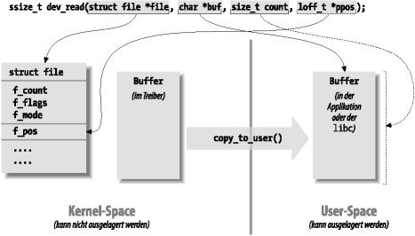

> > > >
Die Methoden read und write führen eine ähnliche Aufgabe durch, sie kopieren also Daten aus dem und in den Applikationscode. Ihre Prototypen sind daher sehr ähnlich und können gleichzeitig eingeführt werden:
ssize_t read(struct file *filp, char *buff,
size_t count, loff_t *offp);
ssize_t write(struct file *filp, const char *buff,
size_t count, loff_t *offp); |
Bei beiden Methoden ist filp der file-Zeiger und count die Größe der angeforderten Datenübertragung. Das Argument buff zeigt auf den Benutzer-Puffer, der die zu schreibenden Daten enthält, oder auf den leeren Puffer, in den die gelesenen Daten hineingeschrieben werden sollen. offp ist schließlich ein Zeiger auf ein Objekt mit “langem Offset”, das die Dateiposition angibt, auf die der Benutzer zugreifen will. Der Rückgabewert ist ein “vorzeichenbehafteter Größentyp”, dessen Verwendung wir später behandeln.
Was den Datentransfer angeht, besteht die Hauptschwierigkeit der beiden Geräte-Methoden darin, die Daten zwischen dem Adreßraum des Kernels und dem des Benutzers hin- und herzutransportieren. Die Operation kann nicht auf die übliche Weise mittels Zeigern oder memcpy durchgeführt werden. User-Space-Adressen können aus einer Reihe von Gründen nicht direkt im Kernel-Space verwendet werden.
Ein großer Unterschied zwischen Adressen im Kernel-Space und Adressen im User-Space besteht darin, daß Speicher im User-Space ausgelagert werden kann. Wenn der Kernel auf einen Zeiger im User-Space zugreift, ist die zugehörige Seite möglicherweise nicht im Speicher vorhanden, und es wird ein Seitenfehler(Page Fault) erzeugt. Die in diesem Abschnitt und im Abschnitt the Section called Das Argument von ioctl benutzen in Kapitel 5 in Kapitel 5 eingeführten Funktionen verwenden ein paar versteckte Zaubertricks, um auch dann noch korrekt mit Seitenfehlern umzugehen, wenn die CPU sich gerade im Kernel-Space befindet.
Interessanterweise verwendete die x86-Version von Linux 2.0 völlig unterschiedliche Speichertabellen im User-Space und im Kernel-Space. User Space-Zeiger konnten überhaupt nicht vom Kernel-Space aus dereferenziert werden.
Wenn das Ziel-Gerät eine Erweiterungskarte anstelle von RAM ist, entsteht das gleiche Problem, weil der Treiber trotzdem noch Daten zwischen Benutzer-Puffern und dem Kernel-Space (sowie möglicherweise zwischen dem Kernel-Space und dem I/O-Speicher) übertragen muß.
Das Kopieren zwischen Spaces geschieht in Linux mit speziellen Funktionen, die in <asm/uaccess.h> definiert sind. Eine solche Kopie wird entweder durch eine generische (memcpy -artige) Funktion oder durch Funktionen, die für eine bestimmte Datengröße (char, short, int, long) optimiert sind, durchgeführt; die meisten davon werden im Abschnitt the Section called Das Argument von ioctl benutzen in Kapitel 5> in Kapitel 5> erklärt.
Der Code für read und write in scull muß ein gesamtes Datensegment in den Benutzer-Adreßraum oder aus ihm heraus kopieren. Diese Fähigkeit wird durch die folgenden Kernel-Funktionen bereitgestellt, die ein beliebiges Array von Bytes kopieren und das Herzstück jeder read- und write-Implementation sind:
unsigned long copy_to_user(void *to, const void *from,
unsigned long count);
unsigned long copy_from_user(void *to, const void *from,
unsigned long count); |
Obwohl sich diese Funktionen wie normale memcpy-Funktionen verhalten, müssen Sie ein wenig zusätzliche Vorsicht walten lassen, wenn Sie von Kernel-Code aus auf den User-Space zugreifen wollen. Die angesprochenen Seiten im User Space sind möglicherweise nicht im Speicher vorhanden, und der Page Fault-Handler kann den Prozeß schlafen legen, während die Seite geholt wird. Dies passiert beispielsweise, wenn die Seite aus dem Swap-Space geholt werden muß. Daraus folgt für den Treiberautor, daß jede Funktion, die auf den User-Space zugreift, reentrant sein muß und gleichzeitig mit anderen Treiberfunktionen laufen können muß (siehe auch Abschnitt the Section called Reentranten Code schreiben in Kapitel 5> in Kapitel 5>). Deswegen verwenden wir Semaphore, um den nebenläufigen Zugriff zu steuern.
Die Rolle der beiden Funktionen ist nicht darauf beschränkt, Daten in den oder aus dem User-Space zu kopieren: Sie überprüfen auch, ob der Zeiger in den User-Space gültig ist. Wenn das nicht der Fall ist, wird auch nicht kopiert; wenn aber während des Kopierens eine ungültige Adresse vorgefunden wird, werden nur Teile der Daten kopiert. In beiden Fällen ist der Rückgabewert die verbleibende Menge zu kopierender Daten. Der Code in scull überprüft diesen Wert und gibt -EFAULT zurück, wenn es sich nicht um 0 handelt.
Das Thema des Zugriffs auf den User-Space sowie ungültiger User Space-Zeiger ist etwas komplizierter und wird im Abschnitt the Section called Das Argument von ioctl benutzen in Kapitel 5> in Kapitel 5> besprochen. Es lohnt sich aber zu wissen, daß Sie _ _copy_to_user und _ _copy_from_user verwenden können, wenn Sie sicher sind, den User-Space-Zeiger nicht überprüfen zu müssen, etwa, wenn Sie diesen bereits überprüft haben.
Was die eigentlichen Gerätemethoden angeht, so ist es die Aufgabe der read-Methode, Daten vom Gerät (unter Verwendung von copy_to_user) in den User-Space zu kopieren, während write Daten vom User-Space auf das Gerät kopieren muß (mittels copy_from_user). Jeder read- und write-Systemaufruf überträgt eine bestimmte Anzahl von Bytes, aber es ist dem Treiber freigestellt, weniger Daten zu übertragen — die genauen Regeln dafür unterscheiden sich beim Lesen und beim Schreiben etwas und werden weiter hinten in diesem Kapitel beschrieben.
Wie viele Daten die Methoden auch immer transportieren; sie sollten im allgemeinen die Dateiposition an *offp aktualisieren, so daß diese die aktuelle Dateiposition nach einer erfolgreichen Beendigung des Systemaufrufs wiedergibt. Meistens ist das Argument offp nur ein Zeiger auf filp->f_pos, aber zur Unterstützung der Systemaufrufe pread und pwrite, die das Gegenstück zu lseek und read oder write in einer einzigen atomaren Operation ausführen, wird ein anderer Zeiger verwendet.
Die Aufgabe der verschiedenen Argumente von read ist in Abbildung 3-2 wiedergegeben.
Abbildung 3-2. Die Argumente von read

Sowohl die Methode read als auch die Methode write gibt einen negativen Wert zurück, wenn ein Fehler auftritt. Ein Rückgabewert größer oder gleich 0 teilt dem aufrufenden Programm mit, wie viele Bytes erfolgreich übertragen worden sind. Wenn einige Daten korrekt transportiert wurden und dann ein Fehler auftritt, ist der Rückgabewert trotzdem noch die Anzahl der erfolgreich übertragenen Bytes; der Fehler wird nicht vor dem nächsten Funktionsaufruf gemeldet.
Obwohl Kernel-Funktionen eine negative Zahl zurückgeben, um einen Fehler zu melden, und der Betrag dieser Zahl angibt, welcher Fehler aufgetreten ist (wie in Kapitel 2 im Abschnitt the Section called Fehlerbehandlung in init_module in Kapitel 2 beschrieben), sehen Programme im User-Space immer nur -1 als Fehlercode. Diese Programme müssen auf die Variable errno zugreifen, um herauszufinden, was passiert ist. Dieser Unterschied liegt zum einen am POSIX-Aufrufstandard für Systemaufrufe und zum anderen am Vorteil, im Kernel nicht mit errno umgehen zu müssen.
Der Rückgabewert von read wird vom aufrufenden Programm folgendermaßen interpretiert:
Wenn der Wert gleich dem Argument count ist, dann ist die angeforderte Zahl von Bytes übertragen worden. Dies ist der optimale Fall.
Wenn der Wert positiv, aber kleiner als count ist, ist nur ein Teil der Daten übertragen worden. Das kann aus einer Reihe von Gründen passieren, die vom jeweiligen Gerät abhängen. Meistens wird das Programm noch einmal versuchen, die Daten zu lesen. Wenn Sie beispielsweise die Funktion fread verwenden, dann ruft die Bibliotheksfunktion den Systemaufruf noch einmal auf, um die angeforderte Datenübertragung noch einmal durchzuführen.
Wenn der Wert Null ist, wird das als Erreichen des Dateiendes interpretiert.
Ein negativer Wert weist auf einen Fehler hin. Der Wert gibt an, was für ein Fehler das war; die Werte stehen in <linux/errno.h>. Diese Fehler sehen aus wie -EINTR (unterbrochener Systemaufruf) oder -EFAULT (fehlerhafte Adresse).
In der obenstehenden Liste fehlt noch der Fall, daß keine Daten vorliegen, aber später eintreffen könnten. In diesem Fall sollte der Systemaufruf read blockiert werden. Wir behandeln blockierendes Lesen erst im Abschnitt the Section called Blockierende I/O in Kapitel 5 in Kapitel 5.
Der Code von scull macht von diesen Regeln Gebrauch, insbesondere vom partiellen Lesen. Jeder Aufruf von scull_read behandelt nur ein einziges Daten-Quantum; es gibt keine Schleife, um alle Daten auszulesen. Damit ist der Code kürzer und leichter zu lesen. Wenn das lesende Programm mehr Daten benötigt, kann es den Systemaufruf wiederholen. Wenn die Standardbibliothek (also fread und Konsorten) zum Lesen verwendet wird, wird die Applikation nicht einmal bemerken, daß der Datentransfer in Schüben erfolgt.
Wenn die aktuelle Leseposition größer als die Größe des Gerätes ist, gibt die read-Methode von scull 0 zurück, um mitzuteilen, daß keine Daten vorliegen (daß wir also mit anderen Worten am Dateiende sind). Diese Situation kann auftreten, wenn ein Prozeß A von dem Gerät liest, während Prozeß B das Gerät zum Schreiben öffnet und damit das Gerät auf eine Länge von 0 verkürzt. Prozeß A findet sich selbst auf einmal jenseits des Dateiendes wieder, und der nächste read-Aufruf gibt 0 zurück.
Der Code von read sieht wie folgt aus:
ssize_t scull_read(struct file *filp, char *buf, size_t count,
loff_t *f_pos)
{
Scull_Dev *dev = filp->private_data; /* das erste Listenelement */
Scull_Dev *dptr;
int quantum = dev->quantum;
int qset = dev->qset;
int itemsize = quantum * qset; /* wie viele Bytes sind im Listenelement */
int item, s_pos, q_pos, rest;
ssize_t ret = 0;
if (down_interruptible(&dev->sem))
return -ERESTARTSYS;
if (*f_pos >= dev->size)
goto out;
if (*f_pos + count > dev->size)
count = dev->size - *f_pos;
/* Listenelement, qset-Index und Offset im Quantum suchen */
item = (long)*f_pos / itemsize;
rest = (long)*f_pos % itemsize;
s_pos = rest / quantum; q_pos = rest % quantum;
/* der Liste bis zur richtigen Position (anderenorts definiert) folgen */
dptr = scull_follow(dev, item);
if (!dptr->data)
goto out; /* Loecher nicht füllen */
if (!dptr->data[s_pos])
goto out;
/* nur bis zum Ende dieses Quantums lesen */
if (count > quantum - q_pos)
count = quantum - q_pos;
if (copy_to_user(buf, dptr->data[s_pos]+q_pos, count)) {
ret = -EFAULT;
goto out;
}
*f_pos += count;
ret = count;
out:
up(&dev->sem);
return ret;
}
|
write kann wie read weniger Daten übertragen, als angefordert waren. Die folgenden Regeln gelten für den Rückgabewert:
Wenn der Wert gleich count ist, ist die angeforderte Anzahl von Bytes übertragen worden.
Wenn der Wert positiv, aber kleiner als count ist, dann wurde nur ein Teil der Daten übertragen. Das Anwendungsprogramm wird wahrscheinlich versuchen, auch den Rest der Daten zu schreiben.
Wenn der Wert 0 ist, ist nichts geschrieben worden. Dieses Ergebnis ist kein Fehler, weswegen auch kein Fehlercode zurückgegeben wird. Auch hier wird die Standardbibliothek write erneut aufrufen. Wir werden die Bedeutung dieses Falls im Abschnitt the Section called Blockierende I/O in Kapitel 5 in Kapitel 5 untersuchen, wenn wir auf blockierendes Schreiben eingehen.
Ein negativer Wert weist auf einen aufgetretenen Fehler hin. Wie bei read sind die möglichen Fehlerwerte in <linux/errno.h> definiert.
Unglücklicherweise gibt es einige schlecht geschriebene Programme, die eine Fehlermeldung ausgeben und abbrechen, wenn Daten nur partiell übertragen worden sind. Das passiert, weil es manche Programmierer gewohnt sind, write-Aufrufe entweder ganz oder gar nicht gelingen zu sehen, was auch meistens passiert und von den Geräten ebenfalls unterstützt werden sollte. Diese Einschränkung in der Implementation von scull könnte behoben werden, aber wir wollten den Code nicht komplizierter als notwendig machen.
Der Code von write in scull behandelt wie der von read jeweils nur ein Quantum:
ssize_t scull_write(struct file *filp, const char *buf, size_t count,
loff_t *f_pos)
{
Scull_Dev *dev = filp->private_data;
Scull_Dev *dptr;
int quantum = dev->quantum;
int qset = dev->qset;
int itemsize = quantum * qset;
int item, s_pos, q_pos, rest;
ssize_t ret = -ENOMEM; /* der Wert wird in "goto out"-Anweisungen verwendet */
if (down_interruptible(&dev->sem))
return -ERESTARTSYS;
/* Listenelement, qset-Index und Offset suchen */
item = (long)*f_pos / itemsize;
rest = (long)*f_pos % itemsize;
s_pos = rest / quantum; q_pos = rest % quantum;
/* der Liste bis zur richtigen Position folgen */
dptr = scull_follow(dev, item);
if (!dptr->data) {
dptr->data = kmalloc(qset * sizeof(char *), GFP_KERNEL);
if (!dptr->data)
goto out;
memset(dptr->data, 0, qset * sizeof(char *));
}
if (!dptr->data[s_pos]) {
dptr->data[s_pos] = kmalloc(quantum, GFP_KERNEL);
if (!dptr->data[s_pos])
goto out;
}
/* nur bis zum Ende dieses Quantums schreiben */
if (count > quantum - q_pos)
count = quantum - q_pos;
if (copy_from_user(dptr->data[s_pos]+q_pos, buf, count)) {
ret = -EFAULT;
goto out;
}
*f_pos += count;
ret = count;
/* die Groeße aktualisieren */
if (dev->size < *f_pos)
dev-> size = *f_pos;
out:
up(&dev->sem);
return ret;
} |
Unix-Systeme unterstützen seit langem zwei alternative Systemaufrufe namens readv und writev. Diese “Vektorversionen” erwarten ein Array von Strukturen, die jeweils einen Zeiger auf einen Puffer und einen Längenwert enthalten. Ein readv-Aufruf liest dann der Reihe nach die angegebene Menge in jeden Puffer. writev dagegen sammelt die Inhalte der Puffer und schreibt sie in einer einzigen Schreiboperation heraus.
Bis zur Kernel-Version 2.3.44 emulierte Linux allerdings readv und writev immer durch mehrfache read- und write-Aufrufe. Wenn Ihr Treiber keine Methoden für Vektoroperationen bereitstellt, dann ist das auch immer noch der Fall. In vielen Situationen erreicht man aber eine größere Effizienz, wenn man readv und writev direkt im Treiber implementiert.
Die Prototypen der Vektoroperationen lauten:
ssize_t (*readv) (struct file *filp, const struct iovec *iov,
unsigned long count, loff_t *ppos);
ssize_t (*writev) (struct file *filp, const struct iovec *iov,
unsigned long count, loff_t *ppos); |
Hier sind die Argumente filp und ppos die gleichen wie bei read und write. Die in <linux/uio.h> definierte Struktur iovec sieht folgendermaßen aus:
struct iovec
{
void *iov_base;
_ _kernel_size_t iov_len;
}; |
Jedes iovec beschreibt einen zu übertragenden Datenblock, der bei iov_base (im User-Space) beginnt und iov_len Bytes lang ist. Der Parameter count gibt an, wie viele iovec-Strukturen es gibt. Diese Strukturen werden von der Applikation erzeugt, aber der Kernel kopiert sie vor dem Aufruf des Treibers in den Kernel-Space.
Die einfachste Implementation der Vektoroperationen ist eine einfache Schleife, die einfach die Adresse und Länge jedes iovec-Blocks an die read- oder write-Funktion des Treibers übergibt. Oft muß der Treiber für ein effizientes und korrektes Verhalten etwas schlauer sein. Beispielsweise sollte ein writev auf einem Bandlaufwerk sämtliche Daten aus den iovec-Strukturen in einem einzigen Datensatz auf das Band schreiben.
Viele Treiber haben aber keinen Vorteil darin, diese Methoden selbst zu implementieren. Daher werden sie in scull einfach weggelassen. Der Kernel emuliert sie mit read und write, und das Ergebnis ist das gleiche.